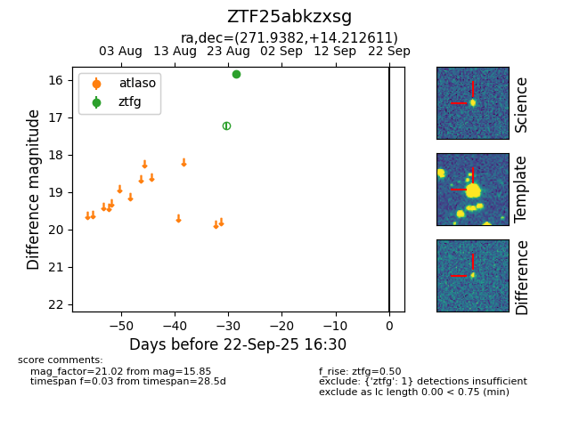

FINK: ZTF25abkzxsg
Lasair: ZTF25abkzxsg
ALeRCE: ZTF25abkzxsg
ZTF25abkzxsg (ztf,fink)
equatorial (ra, dec) = (271.9382,+14.21261)
galactic (l, b) = (40.9905,+15.98638)

last ztfg=15.85
1 ztfg detections